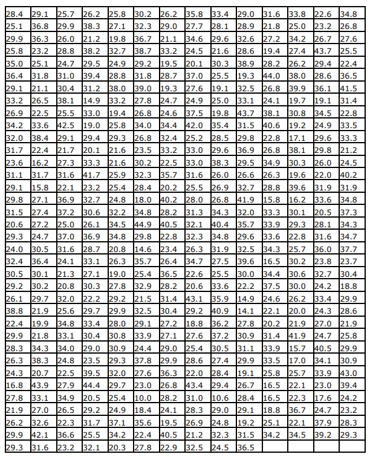
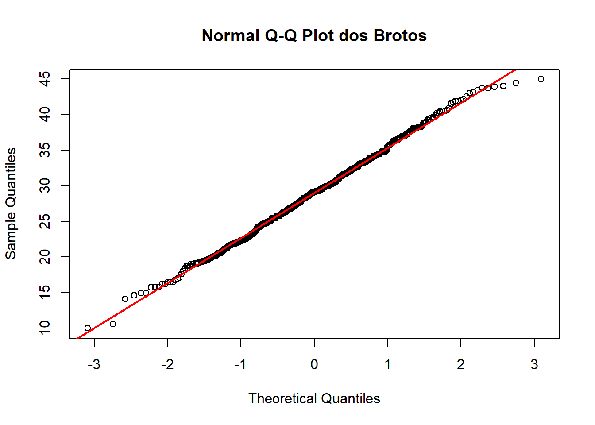

12 R Módulo 3.1 - Estatísticas descritivas e normalidade
RESUMO
A estatística descritiva tem um papel importante a desempenhar na ciência. Quando problemas específicos são tratados na ciência, os dados precisam ser coletados, analisados e apresentados de forma concisa para que outros possam se beneficiar do que foi encontrado.
Apresentação
A estatística descritiva tem um papel importante a desempenhar na ciência. Quando problemas específicos são tratados na ciência, os dados precisam ser coletados, analisados e apresentados de forma concisa para que outros possam se beneficiar do que foi encontrado. Geralmente não é possível apresentar um conjunto de dados completo em uma publicação ou em um seminário e, mesmo que fosse, é improvável isso permitisse uma boa comunicação dos resultados da pesquisa. Em vez disso, os dados são geralmente resumidos como tabelas de frequência, histogramas e estatísticas descritivas que os leitores ou ouvintes podem assimilar prontamente, mas que ainda transmitem os elementos essenciais do conjunto de dados original. O principal objetivo do cálculo das estatísticas descritivas é transmitir informações essenciais contidas em um conjunto de dados da forma mais concisa e clara possível.
12.1 Sobre os dados
Considere os dados sobre o comprimento dos brotos de Banksia ericifolia de charnecas11 na Baía de Jervis, Austrália (BRADSTOCK; TOZER; KEITH, 1997) (Figura 12.1). Existem 500 medições, um conjunto de dados formidável. Por inspeção, o comprimento mínimo do broto é 10,0 e o máximo é 44,9 cm. Esses valores definem o intervalo da amostra. Agora precisamos subdividir o intervalo em intervalos ou classes, cada um com o mesmo tamanho. Geralmente, é aconselhável arredondar o valor mínimo para baixo e o valor máximo para valores apropriados ao decidir as classes de intervalos. Nesse caso, parece sensato dividir a faixa de 10 a 45 cm em sete intervalos a cada 5 cm de largura. Se contarmos o número de brotos que se encontram em cada um dos sete intervalos, temos a base para a tabulação da frequência. A coluna de frequência foi obtida contando o número de medições que existem dentro de cada classe. A coluna de frequência percentual foi obtida representando cada contagem como uma porcentagem da contagem total. A frequência cumulativa e as frequências percentuais cumulativas foram obtidas somando progressivamente as frequências correspondentes.

Figura 12.1: Comprimentos (cm) de 500 brotos do arbusto Banksia ericifolia de charnecas na Baía de Jervis, Austrália.
12.2 Organização básica
Instalando os pacotes necessários para esse módulo
install.packages("openxlsx") #importa arquivos do excel
install.packages("fdth")Os códigos acima, são usados para instalar e carregar os pacotes necessários para este módulo. Esses códigos são comandos para instalar pacotes no R. Um pacote é uma coleção de funções, dados e documentação que ampliam as capacidades do R (R CRAN (R DEVELOPMENT CORE TEAM, 2017) e RStudio (R STUDIO TEAM, 2022)). No exemplo acima, o pacote openxlsx permite ler e escrever arquivos Excel no R. Para instalar um pacote no R, você precisa usar a função install.packages().
Depois de instalar um pacote, você precisa carregá-lo na sua sessão R com a função library(). Por exemplo, para carregar o pacote openxlsx, você precisa executar a função library(openxlsx). Isso irá permitir que você use as funções do pacote na sua sessão R. Você precisa carregar um pacote toda vez que iniciar uma nova sessão R e quiser usar um pacote instalado.
Agora vamos definir o diretório de trabalho. Esse código é usado para obter e definir o diretório de trabalho atual no R. O comando getwd() retorna o caminho do diretório onde o R está lendo e salvando arquivos. O comando setwd() muda esse diretório de trabalho para o caminho especificado entre aspas. No seu caso, você deve ajustar o caminho para o seu próprio diretório de trabalho. Lembre de usar a barra “/” entre os diretórios. E não a contra-barra “\”.
12.3 Importando a planilha
ATENÇÃO
Os links para baixar as planilhas necessárias para repetir esse tutorial podem ser encontrados na seção Arquivos disponíveis do Capítulo Bases de dados.
Ou, baixe aqui o arquivo brotos.xlsx
Note que o símbolo # em programação R significa que o texto que vem depois dele é um comentário e não será executado pelo programa. Isso é útil para explicar o código ou deixar anotações. Ajuste a segunda linha do código abaixo para refletir “C:/Seu/Diretório/De/Trabalho/Planilha.xlsx”.
library(openxlsx)
brotos <- read.xlsx("D:/Elvio/OneDrive/Disciplinas/_EcoNumerica/5.Matrizes/brotos.xlsx",
rowNames = F, colNames = F,
sheet = "Planilha1")
head(brotos,10)
head(brotos[, 1:5], 10)## X1 X2 X3 X4 X5 X6 X7 X8 X9 X10
## 1 28.4 29.1 25.7 26.2 25.8 30.2 26.2 35.8 33.4 29.0
## 2 25.1 36.8 29.9 38.3 27.1 32.3 29.0 27.7 28.1 28.9
## 3 29.9 36.3 26.0 21.2 19.8 36.7 21.1 34.6 29.6 32.6
## 4 25.8 23.2 28.8 38.2 32.7 38.7 33.2 24.5 21.6 28.6
## 5 35.0 25.1 24.7 29.5 24.9 29.2 19.5 20.1 30.3 38.9
## 6 36.4 31.8 31.0 39.4 28.8 31.8 28.7 37.0 25.5 19.3
## 7 29.1 21.1 30.4 31.2 38.0 39.0 19.3 27.6 19.1 32.5
## 8 33.2 26.5 38.1 14.9 33.2 27.8 24.7 24.9 25.0 33.1
## 9 26.9 22.5 25.5 33.0 19.4 26.8 24.6 37.5 19.8 43.7
## 10 34.2 33.6 42.5 19.0 25.8 34.0 34.4 42.0 35.4 31.5
## X1 X2 X3 X4 X5
## 1 28.4 29.1 25.7 26.2 25.8
## 2 25.1 36.8 29.9 38.3 27.1
## 3 29.9 36.3 26.0 21.2 19.8
## 4 25.8 23.2 28.8 38.2 32.7
## 5 35.0 25.1 24.7 29.5 24.9
## 6 36.4 31.8 31.0 39.4 28.8
## 7 29.1 21.1 30.4 31.2 38.0
## 8 33.2 26.5 38.1 14.9 33.2
## 9 26.9 22.5 25.5 33.0 19.4
## 10 34.2 33.6 42.5 19.0 25.8Exibindo os dados importados (esses comando são “case-sensitive” ignore.case(object)).
Brotos.xlsx está como um dataframe. Precisaremos converter para um vetor. Para isso, transformamos o dataframe em matriz numérica (as.matrix()), e na sequência usamos as.vector() para achatar a matriz em uma única dimensão.
## [1] 28.4 25.1 29.9 25.8 35.0 36.4 29.1 33.2 26.9 34.2 32.0 31.7 23.6 31.1 29.1
## [16] 29.8 31.5 20.6 29.3 24.0 32.4 30.5 29.2 26.1 38.8 22.4 29.9 28.3 26.3 24.3
## [31] 16.8 27.8 21.9 26.2 29.9 29.3 31.6 23.2 32.1 20.3 27.8 22.9 32.5 24.5 36.5
## [46] 39.4 24.2 23.2 28.3 29.3 29.1 36.8 36.3 23.2 25.1 31.8 21.1 26.5 22.5 33.6
## [61] 38.4 22.4 16.2 31.7 15.8 27.1 27.4 27.2 24.7 30.5 36.4 30.1 30.2 29.7 21.9
## [76] 19.9 21.8 34.3 38.3 20.7 43.9 33.1 27.0 32.6 42.1 34.8 26.8 27.6 25.5 22.4
## [91] 36.5 41.5 31.4 22.8 33.5 33.3 21.2 24.5 40.2 31.9 25.7 29.9 26.0 28.8 24.7
## [106] 31.0 30.4 38.1 25.5 42.5 29.1 21.7 27.3 31.6 22.1 36.9 37.2 25.0 37.0 31.6
## [121] 24.1 21.3 20.8 32.0 25.6 34.8 33.1 34.0 24.8 22.5 27.9 34.9 26.5 22.3 36.6
## [136] 34.8 37.3 34.3 34.7 37.7 23.7 30.4 18.8 29.9 28.6 21.9 25.8 29.9 30.9 43.0
## [151] 26.2 38.3 21.2 38.2 29.5 39.4 31.2 14.9 33.0 19.0 29.4 20.1 33.3 41.7 23.2
## [166] 32.7 30.6 26.1 36.9 28.7 33.1 27.1 30.3 22.2 29.7 33.4 30.4 29.0 23.5 39.5
## [181] 44.4 20.5 29.2 31.7 25.5 22.6 23.2 26.7 43.7 29.4 28.6 36.1 19.1 34.5 24.9
## [196] 29.6 29.8 26.0 22.0 31.9 25.8 27.1 19.8 32.7 24.9 28.8 38.0 33.2 19.4 25.8
## [211] 29.3 21.6 21.6 25.9 25.4 24.8 32.2 34.5 34.8 20.8 26.3 19.0 27.8 29.2 29.9
## [226] 28.0 30.8 30.9 29.3 32.0 29.7 25.4 24.9 37.1 34.2 33.6 20.5 28.1 31.6 36.0
## [241] 23.8 32.7 24.2 33.4 24.3 27.0 24.7 40.5 34.1 33.9 30.2 32.3 36.7 38.7 29.2
## [256] 31.8 39.0 27.8 26.8 34.0 26.8 23.5 30.2 32.3 28.4 18.0 34.8 44.9 29.8 14.6
## [271] 35.7 25.4 32.9 21.5 32.5 29.1 33.9 24.4 37.8 27.6 23.0 10.0 18.4 35.6 22.4
## [286] 23.0 17.6 24.7 37.9 39.2 16.2 30.1 29.3 22.8 25.7 30.2 30.6 30.0 26.2 20.0
## [301] 26.2 29.0 21.1 33.2 19.5 28.7 19.3 24.7 24.6 34.4 32.4 33.2 22.5 35.7 20.2
## [316] 40.2 28.2 40.5 22.8 23.4 26.4 36.5 28.2 31.4 30.4 27.2 27.1 29.0 29.9 36.3
## [331] 26.8 28.2 24.1 19.5 40.5 33.8 25.0 34.2 27.4 26.2 38.0 39.9 19.7 30.8 19.2
## [346] 17.1 38.1 30.3 19.6 39.6 35.8 27.7 34.6 24.5 20.1 37.0 27.6 24.9 37.5 42.0
## [361] 25.2 33.0 33.0 31.6 25.5 28.0 31.3 32.1 32.3 26.3 34.7 22.6 20.6 43.1 29.2
## [376] 18.8 27.6 25.4 28.6 22.0 43.4 31.0 28.3 26.9 21.2 21.9 41.9 15.7 17.0 25.7
## [391] 22.1 22.3 36.7 22.1 34.5 15.8 33.3 33.9 33.6 34.3 33.4 28.1 29.6 21.6 30.3
## [406] 25.5 19.1 25.0 19.8 35.4 28.5 29.6 38.3 26.0 26.9 26.8 34.3 40.4 34.8 31.9
## [421] 27.5 25.5 33.6 35.9 40.9 36.2 37.2 30.5 27.4 28.4 29.4 10.6 29.0 24.8 32.3
## [436] 31.6 21.8 27.2 19.4 28.2 44.0 26.8 24.1 38.1 40.6 22.8 26.8 34.9 26.3 28.8
## [451] 29.0 28.9 32.6 28.6 38.9 19.3 32.5 33.1 43.7 31.5 29.8 36.9 29.5 26.6 32.7
## [466] 41.9 32.0 35.7 29.6 32.5 39.6 30.0 22.2 14.9 14.1 27.8 30.9 31.1 29.9 19.1
## [481] 26.7 28.4 29.1 19.2 31.5 16.5 34.4 37.5 24.6 22.1 20.2 31.4 33.9 33.5 25.8
## [496] 16.5 16.5 18.8 25.1 34.2E agora visualizando nossos dados.
#View(brotos_v)
print(brotos_v)
brotos_v
sort(brotos_v)
str(brotos_v)
mode(brotos_v)
class(brotos_v)
range(brotos_v)
length(brotos_v)Tendo em mãos o conjunto total de 500 comprimentos medidos de brotos de Banksia, agora vamos tirar uma subamostra aleatória de uma parte dos 500 valores. Essa subamostra é tirada usando o comando size= no código subsequente, que estabelece o tamanho da subamostra a ser tirada do total de dados. Por exemplo, para uma subamostra de 150 comprimentos, então size = 150. Nesse tutorial usaremos todos os 500 comprimentos.
set.seed(666)
brotos_sub <- sample(brotos_v, size = 500, replace = F) #atualize o valor de 'size=' se necessário
brotos_sub## [1] 22.4 34.8 33.3 34.5 20.8 28.3 30.4 17.0 25.2 37.7 29.4 29.3 27.9 25.7 23.6
## [16] 29.4 30.3 27.4 27.2 18.8 32.7 26.5 21.7 30.5 31.6 31.7 40.9 34.0 27.2 43.7
## [31] 30.1 34.3 34.8 19.4 20.1 26.7 18.4 29.9 20.7 34.9 29.1 38.3 29.0 24.7 23.4
## [46] 32.3 36.2 30.4 26.8 25.7 20.8 24.3 24.2 14.9 33.5 29.2 38.0 33.1 27.8 26.2
## [61] 28.7 33.2 44.9 25.8 34.2 36.6 40.4 37.9 29.7 35.7 34.1 26.8 30.5 14.9 28.4
## [76] 29.6 25.5 27.7 26.0 37.5 22.4 21.6 40.2 26.2 29.0 42.0 32.0 21.9 31.4 21.3
## [91] 29.1 44.4 25.8 24.1 37.5 27.0 32.6 27.8 28.9 32.9 19.8 24.5 20.1 34.4 24.5
## [106] 21.9 29.5 34.2 24.8 33.9 22.1 33.1 25.1 22.8 31.8 22.1 24.8 25.5 23.0 43.1
## [121] 37.0 38.8 25.8 27.2 40.5 36.3 28.6 30.4 24.5 29.1 33.3 23.7 33.6 26.9 22.8
## [136] 14.6 25.5 31.5 19.8 32.4 16.5 20.2 21.1 21.6 28.1 22.9 32.5 20.5 39.4 29.3
## [151] 31.0 41.7 15.7 31.0 25.8 31.9 27.0 33.2 19.0 19.7 32.2 31.8 19.6 27.8 31.1
## [166] 35.9 38.3 22.2 28.4 16.2 31.9 41.5 27.6 42.5 24.9 22.4 16.5 26.2 36.3 36.5
## [181] 19.4 38.7 32.0 25.4 32.1 30.4 24.6 24.6 29.3 31.4 35.7 33.4 22.6 32.3 24.1
## [196] 22.6 23.2 36.4 19.2 23.2 19.1 34.8 28.5 29.9 24.9 29.9 32.7 31.6 26.3 43.9
## [211] 35.4 20.0 28.6 31.6 33.0 31.9 20.2 24.9 29.7 19.5 29.3 31.7 39.0 35.0 36.5
## [226] 23.0 23.2 22.4 39.9 29.9 22.8 24.0 36.8 24.8 34.3 31.5 38.1 30.2 26.3 36.9
## [241] 21.1 23.2 26.3 31.2 26.0 29.4 33.2 21.9 10.6 15.8 31.6 20.3 21.2 29.3 25.0
## [256] 36.4 38.3 22.3 33.8 28.0 30.8 22.5 36.7 24.2 29.2 40.5 33.1 20.6 14.1 32.4
## [271] 38.0 29.1 21.2 30.3 39.2 43.0 37.2 32.5 32.5 38.9 24.3 37.0 25.4 30.3 37.1
## [286] 43.7 23.8 27.6 34.8 25.4 17.1 31.6 28.8 19.2 27.4 29.7 18.8 34.8 39.4 22.3
## [301] 26.6 28.7 25.5 23.5 20.6 30.2 34.5 40.5 19.1 24.1 36.5 16.8 21.6 24.9 36.9
## [316] 22.1 29.9 33.4 26.9 29.2 26.2 25.0 40.2 24.7 24.4 29.1 25.0 22.0 34.7 28.2
## [331] 29.9 30.5 26.2 27.4 22.0 28.2 29.1 43.4 39.6 27.6 24.7 28.8 29.8 31.3 22.5
## [346] 30.0 34.3 25.5 26.7 31.5 38.4 26.8 33.6 29.5 21.5 35.8 29.0 38.2 33.2 29.8
## [361] 32.3 19.3 26.1 16.2 27.5 30.2 28.8 34.3 28.3 22.5 24.7 32.7 34.7 16.5 42.1
## [376] 26.8 29.0 26.0 33.0 19.1 35.7 36.7 34.4 39.5 37.3 29.9 28.0 41.9 23.2 23.5
## [391] 21.9 28.2 26.9 27.3 29.9 21.2 38.1 30.8 28.6 38.1 15.8 27.1 25.1 28.4 33.9
## [406] 26.3 33.4 37.2 10.0 34.5 27.1 32.5 29.0 28.4 36.9 36.0 34.6 29.3 27.1 28.6
## [421] 28.1 30.1 28.3 19.0 26.1 34.8 27.6 19.9 27.8 34.9 41.9 29.9 25.6 26.8 21.8
## [436] 27.1 25.1 33.3 29.6 33.6 30.9 18.8 33.9 22.1 32.0 44.0 29.8 17.6 18.0 40.6
## [451] 32.7 26.8 29.2 30.0 34.2 25.4 25.7 31.6 26.4 29.2 39.6 27.8 33.6 32.0 30.9
## [466] 24.7 26.5 25.9 25.8 35.6 31.7 29.8 32.3 29.6 33.5 30.2 21.8 30.9 37.8 19.3
## [481] 36.1 33.9 28.2 31.4 20.5 25.5 33.0 22.8 34.0 32.6 30.6 29.6 22.2 26.8 30.6
## [496] 19.5 31.1 34.2 33.1 32.112.4 Averiguando normalidade
O pressuposto de normalidade é um pré-requisito para muitas técnicas estatísticas inferenciais (COAKES; STEED, 2001). Há várias maneiras diferentes de explorar graficamente esse pressuposto:
• Tabela de frequências
• Gráfico Stem-and-leaf
• Assimetria e Curtose
• Histograma
• Boxplot
• Gráfico de Probabilidade Normal (Normal Probability Plot ou Normal Q-Q plot)
• Gráfico normal sem tendência.
Além disso, há várias estatísticas disponíveis para testar a normalidade:
• Estatística de Shapiro-Wilk
• Kolmogorov-Smirnov, com nível de significância de Lilliefors
12.5 Tabela de frequências e gráfico stem-and-leaf
Mas o primeiro passo é construir uma tabela de frequências. Para fazermos uma tabela de frequência do comprimento dos brotos carregamos o pacote fdth e pedimos a função range que retorna o valor máximo e mínimo no vetor.
## [1] 10.0 44.9
## [1] 500Agora é necessário que você substitua os valores de range 10, 44.9 nos valores de início e fim da distribuição de frequência. Os comandos abaixo criam uma tabela de frequência chamada tf com valores máximos e mínimos definidos por range(brotos_v) em intervalor definidos por h=5, e o comando print(tf) exibe a tabela de frequência.
tf <- fdt(brotos_sub, start=10, end=45, h=5) #tabela de frequência
#?fdt #atente para o uso de k, por exemplo tf <- fdt(brotos_sub, k=7)
print(tf)## Class limits f rf rf(%) cf cf(%)
## [10,15) 6 0.01 1.2 6 1.2
## [15,20) 35 0.07 7.0 41 8.2
## [20,25) 93 0.19 18.6 134 26.8
## [25,30) 155 0.31 31.0 289 57.8
## [30,35) 130 0.26 26.0 419 83.8
## [35,40) 57 0.11 11.4 476 95.2
## [40,45) 24 0.05 4.8 500 100.0Class limits = limites de classe, f = frequência de classe, rf = frequência relativa da classe, rf(%) = frequência relativa percentual da classe, cf = frequência cumulativa da classe, cf(%) = frequência cumulativa percentual da classe.
Se contarmos o número de brotos que se encontram em cada um dos sete intervalos, temos a base para a tabulação da frequência. Essa tabulação é mostrada na tabela gerada pelos códigos acima. A coluna de frequência foi obtida contando o número de medições que existem dentro de cada classe. A coluna de frequência percentual foi obtida representando cada contagem como uma porcentagem da contagem total. A frequência cumulativa e as frequências percentuais cumulativas foram obtidas somando progressivamente as frequências correspondentes.
12.5.1 Sobre tabelas de frequência
O valor de h definido anteriormente foi arbitrário. Em boa estatística, precisamos ser mais critériosos. Para definirmos o valor de h (largura das classes) precisamos ter o valor de k (número de classes). Para isso dividimos a amplitude total dos dados pelo número de classes (k). A amplitude corresponde à diferença entre o maior e o menor valor do conjunto de dados. Essa relação é dada por:
\[ h = \frac{\max(x)-\min(x)}{k} \]
onde, h = largura das classes; max(x) = maior valor observado; min(x) = menor valor observado; k = número de classes.
Essa fórmula é amplamente utilizada na construção de distribuições de frequência e histogramas, pois permite definir intervalos de classe aproximadamente uniformes (ver MOORE; MCCABE; CRAIG (2017)).
Podemos ainda usar a Regra de Sturges para decidir em quantos intervalos (k) os dados devem ser divididos (mas ver HYNDMAN ([s.d.])), através da fórmula:
\[ k = 1 + 3.3\log_{10}(n) \] onde, k = número de classes e n = tamanho da amostra
#Regra de Sturges
k <- 1 + 3.3*log10(length(brotos_sub))
k <- ceiling(k) #ver as funções floor() e round()
h <- (max(brotos_sub) - min(brotos_sub))/k
h <- floor(h)
tf <- fdt(brotos_sub, start=10, end=45, h=h) #tabela de frequência manual
#?fdt #atente para o uso de k, por exemplo tf <- fdt(brotos_sub, k=k)
print(tf)## Class limits f rf rf(%) cf cf(%)
## [10,13) 2 0.00 0.4 2 0.4
## [13,16) 7 0.01 1.4 9 1.8
## [16,19) 14 0.03 2.8 23 4.6
## [19,22) 48 0.10 9.6 71 14.2
## [22,25) 63 0.13 12.6 134 26.8
## [25,28) 82 0.16 16.4 216 43.2
## [28,31) 98 0.20 19.6 314 62.8
## [31,34) 78 0.16 15.6 392 78.4
## [34,37) 52 0.10 10.4 444 88.8
## [37,40) 32 0.06 6.4 476 95.2
## [40,43) 15 0.03 3.0 491 98.212.5.2 Sobre o gráfico stem-and-leaf
Podemos agora entender melhor o que é o gráfico Stem-and-leaf.
##
## The decimal point is at the |
##
## 10 | 06
## 12 |
## 14 | 1699788
## 16 | 225558016
## 18 | 04888001112233445567889
## 20 | 011223556678811222356667889999
## 22 | 0011112233444455566888890022222455678
## 24 | 01112233455566777778889999000111244445555556777888889
## 26 | 0001122222333345567788888889990011112223444566667888889
## 28 | 00112222333444456666778889000001111112222233333344455666677788889999
## 30 | 001122223334444555668899900112344455566666677788999
## 32 | 0000112333344555566777790001111222233344455666689999
## 34 | 00122223333445556778888889904677789
## 36 | 0123344555677899900122355789
## 38 | 001112333478902445669
## 40 | 224555695799
## 42 | 015014779
## 44 | 049
##
## [1] 10.0 10.6 14.1 14.6 14.9 14.9 15.7 15.8 15.8 16.2 16.2 16.5 16.5 16.5 16.8
## [16] 17.0 17.1 17.6 18.0 18.4 18.8 18.8 18.8 19.0 19.0 19.1 19.1 19.1 19.2 19.2
## [31] 19.3 19.3 19.4 19.4 19.5 19.5 19.6 19.7 19.8 19.8 19.9 20.0 20.1 20.1 20.2
## [46] 20.2 20.3 20.5 20.5 20.6 20.6 20.7 20.8 20.8 21.1 21.1 21.2 21.2 21.2 21.3
## [61] 21.5 21.6 21.6 21.6 21.7 21.8 21.8 21.9 21.9 21.9 21.9 22.0 22.0 22.1 22.1
## [76] 22.1 22.1 22.2 22.2 22.3 22.3 22.4 22.4 22.4 22.4 22.5 22.5 22.5 22.6 22.6
## [91] 22.8 22.8 22.8 22.8 22.9 23.0 23.0 23.2 23.2 23.2 23.2 23.2 23.4 23.5 23.5
## [106] 23.6 23.7 23.8 24.0 24.1 24.1 24.1 24.2 24.2 24.3 24.3 24.4 24.5 24.5 24.5
## [121] 24.6 24.6 24.7 24.7 24.7 24.7 24.7 24.8 24.8 24.8 24.9 24.9 24.9 24.9 25.0
## [136] 25.0 25.0 25.1 25.1 25.1 25.2 25.4 25.4 25.4 25.4 25.5 25.5 25.5 25.5 25.5
## [151] 25.5 25.6 25.7 25.7 25.7 25.8 25.8 25.8 25.8 25.8 25.9 26.0 26.0 26.0 26.1
## [166] 26.1 26.2 26.2 26.2 26.2 26.2 26.3 26.3 26.3 26.3 26.4 26.5 26.5 26.6 26.7
## [181] 26.7 26.8 26.8 26.8 26.8 26.8 26.8 26.8 26.9 26.9 26.9 27.0 27.0 27.1 27.1
## [196] 27.1 27.1 27.2 27.2 27.2 27.3 27.4 27.4 27.4 27.5 27.6 27.6 27.6 27.6 27.7
## [211] 27.8 27.8 27.8 27.8 27.8 27.9 28.0 28.0 28.1 28.1 28.2 28.2 28.2 28.2 28.3
## [226] 28.3 28.3 28.4 28.4 28.4 28.4 28.5 28.6 28.6 28.6 28.6 28.7 28.7 28.8 28.8
## [241] 28.8 28.9 29.0 29.0 29.0 29.0 29.0 29.1 29.1 29.1 29.1 29.1 29.1 29.2 29.2
## [256] 29.2 29.2 29.2 29.3 29.3 29.3 29.3 29.3 29.3 29.4 29.4 29.4 29.5 29.5 29.6
## [271] 29.6 29.6 29.6 29.7 29.7 29.7 29.8 29.8 29.8 29.8 29.9 29.9 29.9 29.9 29.9
## [286] 29.9 29.9 29.9 29.9 30.0 30.0 30.1 30.1 30.2 30.2 30.2 30.2 30.3 30.3 30.3
## [301] 30.4 30.4 30.4 30.4 30.5 30.5 30.5 30.6 30.6 30.8 30.8 30.9 30.9 30.9 31.0
## [316] 31.0 31.1 31.1 31.2 31.3 31.4 31.4 31.4 31.5 31.5 31.5 31.6 31.6 31.6 31.6
## [331] 31.6 31.6 31.7 31.7 31.7 31.8 31.8 31.9 31.9 31.9 32.0 32.0 32.0 32.0 32.1
## [346] 32.1 32.2 32.3 32.3 32.3 32.3 32.4 32.4 32.5 32.5 32.5 32.5 32.6 32.6 32.7
## [361] 32.7 32.7 32.7 32.9 33.0 33.0 33.0 33.1 33.1 33.1 33.1 33.2 33.2 33.2 33.2
## [376] 33.3 33.3 33.3 33.4 33.4 33.4 33.5 33.5 33.6 33.6 33.6 33.6 33.8 33.9 33.9
## [391] 33.9 33.9 34.0 34.0 34.1 34.2 34.2 34.2 34.2 34.3 34.3 34.3 34.3 34.4 34.4
## [406] 34.5 34.5 34.5 34.6 34.7 34.7 34.8 34.8 34.8 34.8 34.8 34.8 34.9 34.9 35.0
## [421] 35.4 35.6 35.7 35.7 35.7 35.8 35.9 36.0 36.1 36.2 36.3 36.3 36.4 36.4 36.5
## [436] 36.5 36.5 36.6 36.7 36.7 36.8 36.9 36.9 36.9 37.0 37.0 37.1 37.2 37.2 37.3
## [451] 37.5 37.5 37.7 37.8 37.9 38.0 38.0 38.1 38.1 38.1 38.2 38.3 38.3 38.3 38.4
## [466] 38.7 38.8 38.9 39.0 39.2 39.4 39.4 39.5 39.6 39.6 39.9 40.2 40.2 40.4 40.5
## [481] 40.5 40.5 40.6 40.9 41.5 41.7 41.9 41.9 42.0 42.1 42.5 43.0 43.1 43.4 43.7
## [496] 43.7 43.9 44.0 44.4 44.9Cada linha tem:
ramo | folhas, ou seja,
Ramo (stem) = parte inicial do número Folhas (leaf) = último dígito
Por exemplo:
28 | 00112222333444456666778889
significa valores como:
28.0 28.0 28.1 28.1 28.2 28.2 … 28.9
Ou seja, cada dígito após | completa o número.
12.6 Assimetria e curtose
A assimetria mede a falta de simetria em uma distribuição de frequência. Uma distribuição é simétrica se as duas metades à esquerda e à direita da média são cópias espelhadas uma da outra. Se a distribuição não é simétrica, então é assimétrica. A assimetria pode ser positiva, negativa ou nula (simétrica). Uma assimetria positiva indica que a cauda da distribuição se estende mais para a direita em relação à média (média > mediana > moda), enquanto uma assimetria negativa indica que a cauda da distribuição se estende mais para a esquerda em relação à média (média < mediana < moda).
A curtose descreve o pico ou a “pontiagudez” de uma distribuição. Uma distribuição com alta curtose tem uma alta concentração de valores ao redor da média e caudas mais pesadas (ou seja, valores extremos são mais prováveis). Uma distribuição com baixa curtose é mais achatada e dispersa, com caudas mais leves. A curtose pode ser positiva (distribuição leptocúrtica, com alta concentração em torno da média e caudas pesadas), negativa (distribuição platicúrtica, com dispersão alta e caudas mais leves) ou nula (mesocúrtica, similar à distribuição normal).
Essas medidas são úteis para compreender as propriedades e características de diferentes conjuntos de dados e distribuições de frequência. Elas ajudam a compreender a forma e o comportamento dos dados em uma amostra ou população (ZAR, 2010).
## [1] 0.02432439
## [1] 2.74883112.7 Gráficos de histograma e boxplot
No código abaixo se define o layout dos gráficos para serem exibidos lado a lado, e na sequência criamos um gráfico de histograma com base na tabela de frequência tf. O comando boxplot() cria um gráfico de boxplot para os valores em brotos_v. O argumento “horizontal = TRUE” indica que o boxplot deve ser horizontal.
par(mfrow = c(1,2)) #gráficos lado a lado
plot(tf) #distribuição de frequências
boxplot(brotos_sub, horizontal = TRUE,
xlab="Class limits") #boxplot
par(mfrow = c(1,1)) #gráficos de volta ao normal
Se você recebeu a mensagem de erro “Error in plot.new() : figure margins too large”, aumente o tamanho da janela do gráfico e execute as últimas três linhas de comando novamente.
No boxplot, a linha localizada no interior da caixa representa a mediana, isto é, o valor central da distribuição dos dados. A base da caixa corresponde ao primeiro quartil (Q1), abaixo do qual se encontram 25% das observações, enquanto o topo da caixa corresponde ao terceiro quartil (Q3), abaixo do qual estão 75% dos dados. A própria caixa representa o intervalo interquartil (IQR = Q3 − Q1), contendo os 50% centrais da distribuição. Os bigodes (whiskers) indicam os valores mínimos e máximos que não são considerados outliers, enquanto os pontos isolados representam possíveis valores discrepantes ou outliers.
Uma nota sobre outliers em um boxplot. Seu cálculo varia dentre os textos e tipos de estatísticas sendo calculadas. Para outliers em um boxplot, MOORE; MCCABE; CRAIG (2017) propõe a “regra de 1,5 × IQR para outliers”, onde IQR significa (Interquartile Range ou amplitude interquartil). Ou seja, considere uma observação como um possível outlier se ela estiver mais de 1,5 × IQR acima do terceiro quartil ou abaixo do primeiro quartil.
O IQR (Interquartile Range ou amplitude interquartil) é definido como:
\[ IQR = Q_3 - Q_1 \]
onde, Q1 = primeiro quartil (25%) e Q3 = terceiro quartil (75%).
Essa regra de 1,5×IQR é usada em boxplots para identificar valores potencialmente extremos.
Os limites são calculados como:
\[ \text{Limite inferior} = Q_1 - 1.5 \times IQR \]
\[ \text{Limite superior} = Q_3 + 1.5 \times IQR \]
Valores fora desses limites são considerados possíveis outliers. Façamos o cálculo no R.
# Quartis
Q1 <- quantile(brotos_sub, 0.25)
Q3 <- quantile(brotos_sub, 0.75)
# Intervalo interquartil
IQR <- IQR(brotos_sub)
# Limites para outliers
lim_inf <- Q1 - 1.5 * IQR
lim_sup <- Q3 + 1.5 * IQR
# Valores considerados outliers
outliers <- brotos_sub[
brotos_sub < lim_inf |
brotos_sub > lim_sup
]
# Resultados
Q1
Q3
IQR
lim_inf
lim_sup
outliers
sort(outliers)## 25%
## 24.7
## 75%
## 33.225
## [1] 8.525
## 25%
## 11.9125
## 75%
## 46.0125
## [1] 10.6 10.0
## [1] 10.0 10.612.7.1 Histograma de densidade
Outra forma de ver a distribuição de frequência é através do histograma de densidade de probabilidade e curva normal teórica sobreposta.
hist(brotos_sub, probability = TRUE) #adicionamos a função densidade
curve(dnorm(x, mean = mean(brotos_sub),
sd = sd(brotos_sub)), #cria valores de x dentro do intervalo do gráfico
col = "red",
add = TRUE) #adiciona ao gráfico atual
Esse código adiciona uma curva da distribuição normal sobre um gráfico já existente, nesse caso o histograma. Ou seja, ele desenha a função densidade da distribuição normal usando a média e o desvio padrão dos seus dados. Normalmente essa curva é usada para verificar visualmente se os dados se aproximam de uma distribuição normal. Mas ela só pode ser sobreposta ao histograma de densidade, e não a de frequências, porque ambos passam a estar na mesma escala.
Vejamos:
Nem sempre o gráfico produzido com método acima, com a função hist() e probability = TRUE fica igual ao método anterior usando simplesmente a função plot() e a tabela de frequência criada por fdt(). Principalmente quando temos distribuições de frequências assimétricas.
Isso ocorre porque o histograma produzido pela função hist() e a tabela de frequência produzida pela função fdt(), embora conceitualmente consistentes, representam quantidades diferentes. A principal fonte da diferença está no argumento utilizado no histograma:
hist(brotos_sub, probability = TRUE)Quando utilizamos probability = TRUE o eixo y do histograma deixa de representar frequências absolutas e passa a representar densidade de probabilidade. Por isso, o gráfico apresenta valores pequenos no eixo vertical (0.00-0.06) em vez das frequências maiores esperadas (mostradas por números inteiros).
Isso acontece porque a tabela fdt() apresenta as frequências absolutas ou relativas (%), a partir de:
fdt(brotos_sub, start=10, end=45, h=5)[15,20) -> 35 observações, o que indica que existem 35 valores entre 15 e 20. Já a frequência relativa (rf) é 0.07, e significa que aproximadamente 7% dos dados estão nesse intervalo.
O histograma com probability = TRUE é ajustado para que a área total das barras seja igual a 1 (área total = 1). Nesse caso, o gráfico representa uma densidade de probabilidade, e não frequências absolutas (ou relativas). Uma consequência importante, é que a altura das barras NÃO corresponde diretamente à frequência (nem a forma geral do histograma).
No histograma de densidade temos:
\[ \text{Área} = \text{base} \times \text{altura} \]
então,
\[ \text{altura} = \frac{\text{frequência relativa}}{\text{largura da classe}} \]
Na tabela fdt() desse exmplo foi utilizado h=5, portanto cada classe possui amplitude igual a 5. Para a classe [15,20), a frequência relativa foi 0.07. Assim, a altura esperada da barra no histograma de densidade é aproximadamente:
\[ \frac{0.07}{5} = 0.014 \]
É importante lembrar que em histogramas de densidade, as alturas precisam ser ajustadas para garantir que a área total sob o histograma deve ser igual a 1.
Podemos usar a função hist() para criar um histograma manualmente mostrando as frequências absolutas. Se o objetivo for visualizar frequências absolutas diretamente, basta estabelecer o argumento probability = FALSE. Nesse caso, o eixo y representará contagens/frequências. Podemos ainda definir os intervalos das classes manualmente na função hist()
hist(
brotos_sub,
probability = TRUE,
breaks = seq(10, 45, by = 5)
)
curve(dnorm(x, mean = mean(brotos_sub),
sd = sd(brotos_sub)), #cria valores de x dentro do intervalo do gráfico
col = "red",
add = TRUE) #adiciona ao gráfico atual
Por fim, deve-se ter em mente que nenhum desses métodos gera exatamente o mesmo histograma por que todos usam parâmetros levemente diferentes. O que é importante é a forma da distribuição de frequência e os demais critérios para determinação de normalidade.
12.8 Gráfico de probabilidade normal (Normal probability plot ou Normal Q-Q plot)
Em um gráfico Q-Q normal, pontos próximos da reta indicam que os dados seguem aproximadamente uma distribuição normal. Quando os pontos apresentam curvaturas acentuadas, isso sugere assimetria ou desvios importantes da normalidade. Já pontos muito afastados da reta podem indicar a presença de valores discrepantes (outliers).

12.8.1 Algumas informações sobre o Q-Q plot e porquê ele é importante
O nome Q-Q plot vem de Quantile-Quantile Plot. Ele compara os quantis dos nossos dados com os quantis de uma distribuição teórica normal. Os quantis são posições na distribuição dos dados, por exemplo, a mediana é o quantil 50%. Os quartis dividem os dados em 4 partes, e o percentil divide em 100 partes. Quartis e percentis são tipos de quantis.
Atente que, os “quantis teóricos normais” não vêm dos seus dados. Eles vêm da distribuição normal ideal. O que vem dos seus dados são a quantidade de observações e a ordem dos valores (eixo y do Q-Q plot).
Tendo em vista que O eixo X do Q-Q plot mostra os quantis teóricos da normal padrão,
\[ Z \sim N(0,1) \] e nessa distribuição, a média é 0 e o desvio padrão é 1.
Ou seja, no Q-Q Plot, o eixo X não mostra nossos dados diretamente (eles estão no eixo Y). No eixo X, valores geralmente vão de cerca de -3 até +3, do intervalo de distribuiões, onde ±1σ representa ~68% dos valores, ±2 ~95% e 3σ ~99.7%. Então quase todos os valores ficam entre
\[ -3 \leq Z \leq 3 \]
Dessa forma, cada ponto na distribuição representa o quantil teórico (eixo X) em relação ao valor observado nos nossos dados (eixo Y).
12.9 Sumário estatístico geral
summary(brotos_sub)
#?summary
sd(brotos_sub) #desvio padrão
var(brotos_sub) #variância
names(sort(table(brotos_sub), decreasing = TRUE))[1] #moda## Min. 1st Qu. Median Mean 3rd Qu. Max.
## 10.00 24.70 29.10 28.97 33.23 44.90
## [1] 6.373581
## [1] 40.62254
## [1] "29.9"12.10 Estatística de Shapiro-Wilk
Os testes de Shapiro-Wilk e Kolmogorov-Smirnov são ambos usados para avaliar normalidade, mas funcionam de maneiras diferentes e têm objetivos diferentes (MOORE; MCCABE; CRAIG, 2017). O Shapiro-Wilk é mais utilizado para amostras pequenas e médias. Testa as hipóteses:
H0: os dados seguem distribuição normal
H1: os dados não seguem distribuição normal
shapiro.test(brotos_sub)
#format(p, scientific = FALSE)##
## Shapiro-Wilk normality test
##
## data: brotos_sub
## W = 0.99695, p-value = 0.4748Para um p ≥ 0.05 você não rejeita H0 ao nível de 5%. Ou seja, os dados são compatíveis com uma distribuição normal.
Em um texto científico: O teste de Shapiro-Wilk não indicou desvio significativo da normalidade (W=0.99695, p=0.4748).
12.11 Estatística de Kolmogorov-Smirnov, com nível de significância de Lilliefors
O Kolmogorov-Smirnov é um teste mais geral, desenvolvido para responder a pergunta: “A distribuição observada difere da distribuição teórica?”. Portanto, mede se a distribuição observada difere da distribuição teórica, comparando a distribuição acumulada empírica dos dados com uma distribuição teórica. Por isso, ele pode ser usado para vários tipos de distribuição (normal, exponencial, uniforme, Poisson, etc). A estatística do teste é o D, e ele mede a maior distância entre as duas curvas acumuladas, sendo menos poderoso para normalidade e mais sensível ao centro da distribuição.
No caso do Kolmogorov-Smirnov, para testar normalidade, precisamos fornecer a média e o desvio padrão da amostra. Quando elas são estimados da própria amostra, o teste deixa de ser o Kolmogorov-Smirnov “puro” (mas veja a seguir). Por isso, para normalidade, o Shapiro-Wilk costuma ser preferido. O Kolmogorov-Smirnov pressupõe, ainda, que não existem empates (ties) nos seus dados, ou seja, valores repetidos. Nesses casos, o valor-p pode ficar menos confiável. Quando há muitos empates, a distribuição empírica fica “escalonada”, o que viola a hipótese teórica do teste.
Outro problema do Kolmogorov-Smirnov, para teste de normalidade é que ele precisa da média e do desvio padrão da normal teórica. Se a média e desvio padrão são estimados da amostra, isso enfraquece o teste. Uma possibilidade é a versão adaptada do Kolmogorov-Smirnov de Lilliefors no R. Ele é uma adaptação do Kolmogorov-Smirnov para normalidade com média e desvio padrão estimados da amostra.
ks.test(brotos_sub, "pnorm") #assume media 0 e desvio padrão 1## Warning in ks.test.default(brotos_sub, "pnorm"): não devem existir empates no
## teste de Kolmogorov-Smirnov de apenas uma amostra
ks.test(brotos_sub, #média e desvio padrão estimados da amostra
"pnorm",
mean(brotos_sub),
sd(brotos_sub))## Warning in ks.test.default(brotos_sub, "pnorm", mean(brotos_sub),
## sd(brotos_sub)): não devem existir empates no teste de Kolmogorov-Smirnov de
## apenas uma amostra
#format(p, scientific = FALSE)##
## Asymptotic one-sample Kolmogorov-Smirnov test
##
## data: brotos_sub
## D = 1, p-value < 2.2e-16
## alternative hypothesis: two-sided
##
##
## Asymptotic one-sample Kolmogorov-Smirnov test
##
## data: brotos_sub
## D = 0.021571, p-value = 0.9741
## alternative hypothesis: two-sidedO teste Kolmogorov-Smirnov clássico foi desenvolvido para distribuições contínuas sem empates. No código acima foi estimada média e desvio usando a própria amostra.
Como o Kolmogorov-Smirnov clássico assume parâmetros conhecidos previamente, isso torna o teste “otimista”.
O teste ideal nesse caso é o Lilliefors
#install.packages("nortest")
library(nortest)
lillie.test(brotos_sub)
#format(p, scientific = FALSE)##
## Lilliefors (Kolmogorov-Smirnov) normality test
##
## data: brotos_sub
## D = 0.021571, p-value = 0.827912.12 Transformação de variáveis e outros tipos de conjuntos de dados
Todos os gráficos e estatísticas acima sugerem que os dados de brotos apresentam distribuição normal. Porem, na natureza, as variáveis raramente se conformam a uma distribuição normal clássica, e também raramente lidamos com uma unica variável.
Com mais frequência, as distribuições são assimétricas e apresentam graus variados de assimetria e curtose. Quando a assimetria e a curtose são extremas, a transformação é uma opção. A decisão de transformar variáveis depende da gravidade do afastamento em relação à normalidade. Tendo decidido que a transformação é desejável, o pesquisador deve selecionar os métodos de transformação mais apropriados. As opções disponíveis podem ser encontradas em qualquer bom capítulo sobre triagem dos dados, mas alguns textos que abordam esse tema são SOKAL; ROHLF (1995), SOKAL; ROHLF (2009) e ZAR (2010).
Além disso, em ecologia, comumente temos matrizes multivariadas de dados de espécies (matriz comunitária) ou de dados do ambiente (matriz ambiental). Veja mas matrizes dosponíveis seção Arquivos disponíveis do Capítulo sobre Bases de dados..
12.12.1 Sobre transformações de variáveis em ecologia
As transformações de dados são procedimentos matemáticos aplicados individualmente a cada valor de uma matriz de dados, independentemente das linhas ou colunas. Seu principal objetivo é reduzir problemas estatísticos, como assimetria da distribuição (´skewness´), heterogeneidade de variâncias e excesso de influência de valores muito altos ZAR (2010). Além disso, em análises multivariadas, as transformações ajudam a melhorar medidas de similaridade e a equilibrar a importância entre espécies raras e abundantes (LEGENDRE; LEGENDRE, 1998; VALENTIN, 2000).
Os principais tipos de trabsformação de dados são ZAR (2010):
NOTA
Veja a seção Tipos e estruturas de dados no R do Capítulo Sintaxe e Tipos de dados no R
12.12.1.1 Transformação exponencial (´power transformation´)
A transformação exponencial é uma das mais utilizadas em matrizes ecológicas. Ela consiste em elevar os valores da matriz a uma potência ´p´:
\[ y' = y^p \]
onde:
y = valor original; y′ = valor transformado; p = potência aplicada.
Os valores mais comuns de ´p´ são:
\[ p = 1 \] Ou seja, sem transformação.
\[ p = 0.5 \] Equivale a raiz quadrada, que também pode ser implementada por:
\[ y' = \sqrt{y} \] \[ p = 0.25 \] Equivale a raiz quarta, ou:
\[ y' = \sqrt{\sqrt{y}} \]
Temos ainda: \[ p = 0, \] que, quando aplicado aos valores não-zero dos dados retorna a presença/ausência.
Em resumo, quanto menor o valor de ´p´, maior é a compressão relativa dos valores altos.
12.12.1.2 Transformação logarítmica
Na distribuição de frequência, a transformação logarítmica comprime valores altos e espalha valores baixos, sendo muito utilizada para dados de abundância, biomassa e variáveis ambientais.
Pode ser usada como o log simples (base 10) ou o log natural (base )
Pode ser usada como o log simples (\(\log_{10}(y)\)) ou o log natural (\(\ln(y)\)) (também, \(\log_{e}(y)\), em que \(e = \exp(1)\), como implementado no R).
\[ y' = \log(y) \] Uma variação do log, é: \[ y' = \log(y + 1) \]
O valor 1 é geralmente adicionado para evitar problemas com zeros no conjunto de dados. Essa transformação reduz a influência de valores extremos e melhora a distribuição dos dados.
12.12.1.3 Transformação arco-seno
A transformação arco-seno é aplicada principalmente em dados proporcionais ou percentuais, cujos valores variam entre 0 e 1.
\[ y' = \arcsin(y) \]
Apesar de clássica, ela não é recomendada para muitos casos porque tende a comprimir valores baixos e espalhar valores altos.
12.12.1.4 Transformação arco-seno da raiz quadrada
Essa transformação é mais adequada para dados proporcionais, pois melhora a normalidade e redistribui melhor os valores percentuais.
\[ y' = \arcsin(\sqrt{y}) \] Ou
\[ y' = \frac{2}{\pi}\arcsin(\sqrt{y}) \] Nesses casos, os valores entram na fórmula variando entre 0 e 1, e o resultado continua variando entre 0 e 1. Essa transformação é especialmente útil quando os dados representam proporções ou porcentagens.
Note que, a escolha da transformação deve ser feita com critério, pois diferentes transformações podem alterar os resultados e as conclusões das análises multivariadas. Em ecologia, essa escolha depende mais da interpretação biológica desejada — como enfatizar espécies comuns ou raras — do que apenas de critérios estatísticos.
Para ilustrar o processo de transformação e conjuntos de dados mais realistas, veja o capítulo a seguir.
Script limpo
Aqui apresento o scrip na íntegra sem os textos ou outros comentários. Você pode copiar e colar no R para executa-lo. Lembre de remover os # ou ## caso necessite executar essas linhas.
# rm(list=ls(all=TRUE)) #limpa a memória
# install.packages("openxlsx") #importa arquivos do excel
# install.packages("fdth")
library(openxlsx)
# getwd()
# setwd("C:/Seu/Diretório/De/Trabalho")
library(openxlsx)
brotos <- read.xlsx("D:/Elvio/OneDrive/Disciplinas/_EcoNumerica/5.Matrizes/brotos.xlsx",
rowNames = F, colNames = F,
sheet = "Planilha1")
head(brotos,10)
head(brotos[, 1:5], 10)
# #View(brotos)
# print(brotos[1:5,1:5])
# brotos
# str(brotos)
# mode(brotos)
# class(brotos)
brotos_v <- as.vector(as.matrix(brotos))
brotos_v
# #View(brotos_v)
# print(brotos_v)
# brotos_v
# str(brotos_v)
# mode(brotos_v)
# class(brotos_v)
set.seed(666)
brotos_sub <- sample(brotos_v, size = 500, replace = F) #atualize o valor de 'size=' se necessário
brotos_sub
library(fdth)
range(brotos_sub) #retorna o valor máximo e mínimo
#?range
tf <- fdt(brotos_sub, start=10, end=45, h=5) #tabela de frequência
#?fdt #atente para o uso de k, por exemplo tf <- fdt(brotosv, k=5)
print(tf)
stem(brotos_sub)
sort(brotos_sub)
library(moments)
skewness(brotos_sub)
kurtosis(brotos_sub)
par(mfrow = c(1,2)) #gráficos lado a lado
plot(tf) #distribuição de frequências
boxplot(brotos_sub, horizontal = TRUE,
xlab="Class limits") #boxplot
par(mfrow = c(1,1)) #gráficos de volta ao normal
hist(brotos_sub, probability = TRUE) #adicionamos a função densidade
curve(dnorm(x, mean = mean(brotos_sub),
sd = sd(brotos_sub)), #cria valores de x dentro do intervalo do gráfico
col = "red",
add = TRUE) #adiciona ao gráfico atual
qqnorm(brotos_sub,
main = "Normal Q-Q Plot dos Brotos")
qqline(brotos_sub,
col = "red",
lwd = 2)
summary(brotos_sub)
#?summary
sd(brotos_sub) #desvio padrão
var(brotos_sub) #variância
shapiro.test(brotos_sub)
ks.test(brotos_sub,
"pnorm",
mean(brotos_sub),
sd(brotos_sub))
#install.packages("nortest")
library(nortest)
lillie.test(brotos_sub)